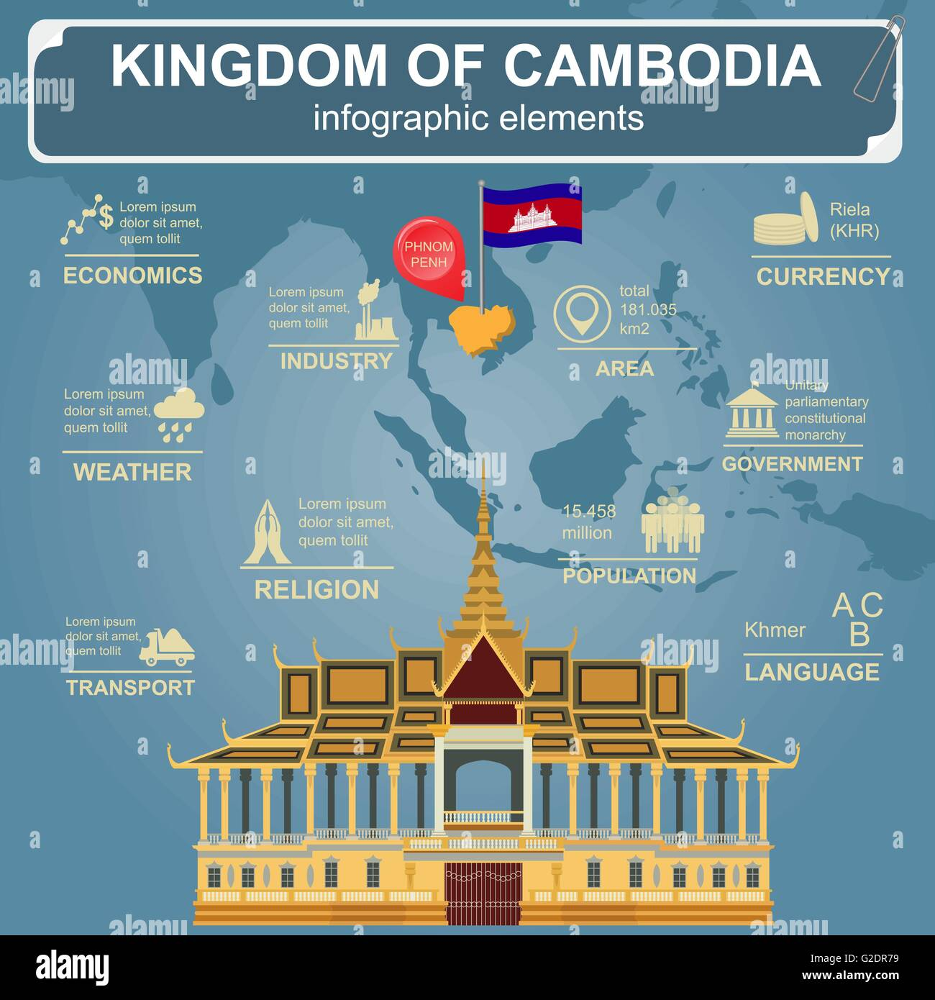

និរុត្តិសាស្ត្រ
ឈ្មោះទីក្រុង "ភ្នំពេញ" បកប្រែជា "ភ្នំពេញ" ក្នុង ខ្មែរ។
វាបានមកពីរឿងព្រេងរបស់ Lady Penh ដែលគេនិយាយថា
បានបង្កើតទីក្រុងនេះបន្ទាប់ពីបានរកឃើញសារីរិកធាតុព្រះពុទ្ធសាសនាដ៏ពិសិដ្ឋនៅលើ
ភ្នំមួយ ដែលឥឡូវគេស្គាល់ថា វត្តភ្នំ។
វប្បធម៌
ទីក្រុងនេះមានបេតិកភណ្ឌវប្បធម៌ដ៏សម្បូរបែប ដោយមានទីតាំងសំខាន់ៗដូចជា
ព្រះបរមរាជវាំង សារមន្ទីរជាតិ និងវត្តភ្នំ។ ភ្នំពេញ
ក៏មានរៀបចំពិធីបុណ្យប្រចាំឆ្នាំជាច្រើនផងដែរ
រួមទាំងបុណ្យជាតិខ្មែរផងដែរ។ ចូលឆ្នាំ និងបុណ្យអុំទូក
ឆ្លុះបញ្ចាំងពីប្រពៃណីរបស់ប្រទេស និងទំនៀមទម្លាប់។
ប្រវត្តិសាស្ត្រ
បង្កើតឡើងក្នុងឆ្នាំ ១៣៧២។
រាជធានីភ្នំពេញបានក្លាយជារាជធានីនៃប្រទេសកម្ពុជា។ ១៤៣៤
ឡើងសោយរាជ្យបន្តពីអង្គរធំ។ នេះ។
ទីក្រុងមានការរីកចម្រើនគួរឱ្យកត់សម្គាល់ក្នុងអំឡុងពេលអាណានិគមបារាំង
រយៈពេល ទទួលបានរហស្សនាមថា "គុជអាស៊ី" សម្រាប់ភាពស្រស់ស្អាតរបស់វា។
ស្ថាបត្យកម្ម និងវប្បធម៌រស់រវើក។
សេដ្ឋកិច្ច
ក្នុងនាមជាមជ្ឈមណ្ឌលសេដ្ឋកិច្ចរបស់ប្រទេសកម្ពុជា
ទីក្រុងភ្នំពេញជាម្ចាស់ផ្ទះជាច្រើនប្រភេទ ឧស្សាហកម្ម រួមមាន
វាយនភណ្ឌ ពាណិជ្ជកម្ម និងខ្នាតតូច និងមធ្យម សហគ្រាស។
សេដ្ឋកិច្ចរបស់ទីក្រុងមានកំណើនយ៉ាងឆាប់រហ័សក្នុងពេលថ្មីៗនេះ។
ឆ្នាំ ទាក់ទាញការវិនិយោគបរទេស និងរួមចំណែក យ៉ាងសំខាន់ចំពោះ GDP
របស់ប្រទេស។